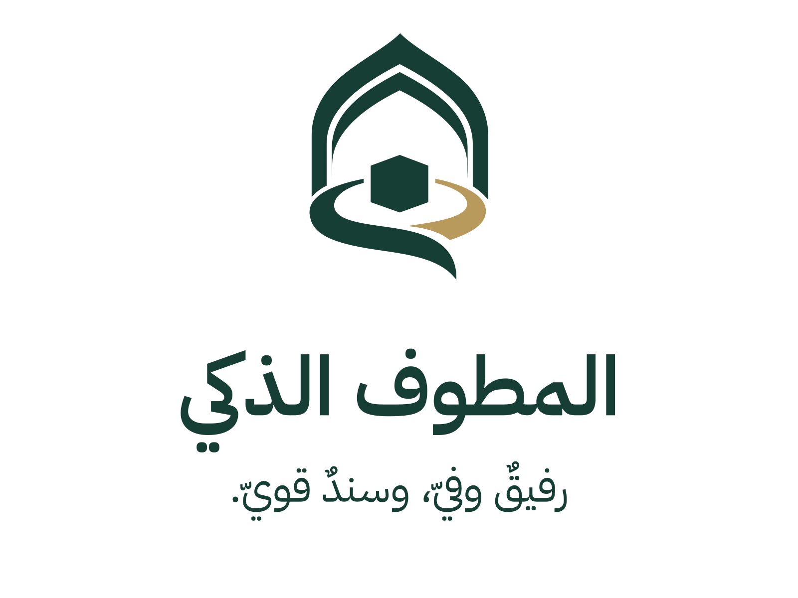

فريق سعي · الإصدار الأول · 8 سبتمبر 2026
هوية المطوف الذكي
للتطبيق والعرض التقديمي
حزمة الهوية التي اعتمدها صاحب المشروع، مع المصدر المتجه، والنسخ الشفافة، وموارد أندرويد والويب. استُخدم خط المشروع في التنفيذ المتجه لتثبيت وضوح الاسم والسلوقان.




الفكرة والمصادر
فريق سعي · حزمة التطبيق والعرض، الإصدار الأول · 8 سبتمبر 2026
حالة الهوية: اعتمد صاحب المشروع هذا الاتجاه للاستخدام في التطبيق والعرض التقديمي. هذا اعتماد لهوية مشروع سعي، وليس اعتمادًا صادرًا من الرئاسة.
الكتابة المعتمدة
يظهر الاسم والسلوقان بسطرين، بهذا الترتيب والنص:
المطوف الذكي
رفيقٌ وفيّ، وسندٌ قويّ.
«المطوف الذكي» اسم المنتج. «سعي» اسم الفريق، ويظهر في التوثيق والتعريف بالفريق؛ لا يُضاف داخل تكوين هذا الشعار.
الفكرة: محراب المسار
يجمع التكوين بين القوس الذي يحيط بالرمز، والمركز الهندسي الذي يستحضر الكعبة، والمسار المفتوح الذي يرافق حركة القاصد. الهدف أن يعبر الشعار عن الإرشاد والطمأنينة والمرافقة، وأن يظل الرمز واضحًا عند استخدامه منفردًا داخل التطبيق.
| العنصر | تفسيرنا التصميمي |
|---|---|
| القوس الأخضر المزدوج | إطار يحتضن التجربة، ويستحضر العمارة المرتبطة بالحرمين. |
| المركز الهندسي | إشارة بصرية مختصرة إلى الكعبة، تربط الرمز بسياق الطواف. |
| المسار المفتوح | رحلة مستمرة وإرشاد يساعد القاصد على فهم الخطوة التالية. |
| الامتداد الذهبي | المرافقة والسند، بما ينسجم مع السلوقان. |
هذه الدلالات تفسير فريق سعي للتصميم، وليست شرحًا رسميًا لشعار الرئاسة أو معاني منسوبة إليها.
المرجع البصري والمصادر
استلهم الاتجاه البصري شكل القوس والروح اللونية من شعار رئاسة الشؤون الدينية بالمسجد الحرام والمسجد النبوي المنشور في موقع هداية ثون. التصميم الناتج هو هوية مستقلة للمشروع، مولّدة ومطوّرة للفريق؛ ولا يمثل شعار الرئاسة أو اعتمادًا رسميًا منها.
- الشعار المرجعي المنشور في موقع هداية ثون: مصدر المرجع البصري. النسخة المرجعية المحلية.
- موقع هداية ثون: سياق الفعالية ومجال تطوير خدمات الإرشاد والطوافة.
- الموقع الرسمي للرئاسة: مرجع اسم الجهة وتعريفها الرسمي.
- مشروع IBM Plex الرسمي: مصدر عائلة الخط المستخدمة في التنفيذ المتجه؛ أُرفق الخط وترخيص OFL.


تمت مراجعة الروابط في 8 سبتمبر 2026. توثيق المصدر لا يمنح ترخيصًا لاستخدام الشعار الأصلي، ولا يتضمن هذا الملف ادعاء حقوق حصرية للتصميم الناتج.
ألوان التنفيذ المقترحة
| الاستخدام | اللون |
|---|---|
| اللون الأساسي والاسم | أخضر داكن #173E35 |
| التفصيل المرافق | ذهبي هادئ #B89B5C |
| خلفية فاتحة | عاجي #F6F5EF |
هذه قيم تنفيذ مقترحة لهوية المشروع، وليست قياسات مستخرجة من دليل هوية رسمي للرئاسة. يفضّل استخدام الأخضر للنصوص الصغيرة، وإبقاء الذهبي للتفاصيل البصرية.
الاستخدام داخل التطبيق
- شاشة البداية والتعريف: التكوين الكامل مع الاسم والسلوقان بسطرين، مع إبقاء النص مقروءًا دون ضغط أو تمديد.
- أيقونة التطبيق والمساحات الصغيرة: الرمز منفردًا؛ يُترك الاسم والسلوقان خارج الأيقونة حتى لا يتحولا إلى كتابة غير مقروءة.
- العرض على خلفيات مختلفة: تُستخدم نسخة مناسبة لكل خلفية، مع التأكد من التباين وعدم اختفاء أجزاء الرمز.
- المساحة المحيطة: يُترك فراغ حول الشعار يعادل نحو ربع عرض الرمز على الأقل. هذه قاعدة تنفيذ مقترحة للحزمة.
- الإتاحة: النص البديل للتكوين الكامل هو «المطوف الذكي — رفيقٌ وفيّ، وسندٌ قويّ.»؛ ويكفي «المطوف الذكي» للرمز المنفرد عندما يحمل وظيفة تعريفية.
- التنفيذ النصي: عند بناء الاسم والسلوقان كنص داخل الواجهة، يُنسخان من الصيغة أعلاه مع اتجاه عربي من اليمين إلى اليسار.
ملفات المصدر وطريقة التنفيذ
أُنشئ الاتجاه البصري باستخدام أداة الصور المدمجة image_gen. بعد اختياره، نُفّذ الرمز بمسارات SVG وAndroid VectorDrawable، ووُحدت كتابة الاسم والسلوقان بخط IBM Plex Sans Arabic المستخدم في المشروع. حُوّلت الحروف إلى مسارات أيضًا، لضمان ثبات الشكل عند تبادل الملف. هذه نسخة تنفيذية وفية للفكرة، وليست تتبعًا آليًا لكل بكسل من الصورة المولدة.
- الصورة المختارة الأصلية.
- برومبت الاتجاه المستنبط من شعار الرئاسة.
- مصدر الرمز المتجه.
- مصدر الشعار الكامل المتجه.
- برنامج بناء مسارات الحروف من الخط وبرنامج التصدير.

الصورة المختارة الأصلية PNG نقطية. ملفات SVG وXML المرفقة مصادر متجهة فعلية لا تحتوي صورة مخفية بداخلها. أُنتجت ملفات PNG النهائية برندر هذه المصادر، مع قناة شفافية حقيقية، وأُعدت نسختان بخلفيتين عاجية وخضراء للعرض التقديمي.
دليل الاستخدام
ابدأ بملف index.html لمعاينة الحزمة، ثم اختر الأصل المناسب من الجدول. الاسم والسلوقان معتمدان بسطرين:
المطوف الذكي
رفيقٌ وفيّ، وسندٌ قويّ.
اختيار الملف
| الاستخدام | الملف |
|---|---|
| الشعار الكامل على خلفية فاتحة | PNG شفاف 1600×1200 |
| الشعار الكامل للطباعة أو العرض الكبير | PNG شفاف 3200×2400 أو SVG كامل |
| الشعار فوق خلفية داكنة | النسخة الفاتحة الشفافة |
| الرمز في الترويسات والساعة | SVG مختصر أو PNG 256 |
| أيقونة Android | مجلد android/res؛ يشمل المقدمة المتجهة والخلفية والطبقة الأحادية وأيقونات الأنظمة القديمة |
| شريحة تعريف بخلفية عاجية | صورة 3840×2160 |
| شريحة تعريف بخلفية خضراء | صورة 3840×2160 |
| مصدر الفكرة والمراجع | الفكرة والمصادر |


لا يحتوي الشعار الكامل على كلمة «سعي»؛ اسم الفريق يرد في التذييل أو شريحة الفريق. يبقى شعار هداية ثون أصلًا مستقلًا يعرّف الفعالية.
التطبيق والساعة
مجلد android/res جاهز للنسخ ضمن موارد الوحدة المطلوبة. أسماء الملفات الجديدة تبدأ بـsmart_mutawwif أو ic_smart_mutawwif لتفادي الكتابة فوق موارد المشروع القائمة. أضف عند الحاجة صورة png/smart-mutawwif-logo.png إلى drawable-nodpi باسم smart_mutawwif_logo.png.
في Compose، استخدم صورة الشعار كاملة على شاشة التعريف بعرض يقارب 280–320dp. في شريط صغير أو داخل الساعة، استخدم الرمز وحده. حافظ على نسبة الصورة 4:3، دون اقتصاص:
Image(
painter = painterResource(R.drawable.smart_mutawwif_logo),
contentDescription = "المطوف الذكي، رفيقٌ وفيّ، وسندٌ قويّ.",
contentScale = ContentScale.Fit,
modifier = Modifier.width(300.dp).aspectRatio(4f / 3f)
)
الساعة الحالية تستخدم Android Views. استخدم ImageView مع FIT_CENTER للرمز. مورد ic_watch الحالي يخدم إشعارات الساعة أيضًا؛ لذا يبقى رمز الإشعار الأحادي مستقلًا عن أيقونة الهوية الملونة عند الدمج.
أيقونة Android الجديدة المقترحة: @mipmap/ic_smart_mutawwif ونسختها الدائرية. لا يكفي تغيير الصورة داخل drawable؛ يجب ربط الأيقونة في Manifest عند دمج الهوية واختبارها على الهاتف والساعة. ملفات الحزمة لا تغير Manifest أو واجهات التطبيق تلقائيًا.
الرمز المتجه للأيقونة مصمم على لوحة 108×108، وجسمه نحو 42×58 داخل دائرة أمان قطرها 66. فُحصت المسارات والشفافية، ولم يُدّع اختبار الحزمة في APK على جهاز فعلي. مرجع Android الرسمي.
الداشبورد
انسخ ملفات web إلى platform/web/public/brand في المشروع. مثال:
<img
src="/brand/smart-mutawwif-logo.png"
alt="المطوف الذكي، رفيقٌ وفيّ، وسندٌ قويّ."
style={{ width: 'min(100%, 320px)', height: 'auto', objectFit: 'contain' }}
/>
يستخدم الشعار الكامل في شاشة التعريف، والرمز فقط في الترويسة الضيقة. النصوص المرافقة للواجهة تبقى نصوصًا فعلية قابلة للتكبير والترجمة.
العرض التقديمي
استخدم PNG الشفاف أو SVG فوق خلفية الشريحة، مع تثبيت نسبة الأبعاد. النسختان 4K مخصصتان لشريحة غلاف أو فصل بهوية فقط؛ لا تُحمّل فوقهما نصوصًا تتداخل مع الاسم والسلوقان.
يظل اسم المنتج في سطر، والسلوقان في السطر الذي يليه. لا يُضغط السلوقان داخل أيقونة صغيرة، ولا يعاد ترتيب الكلمات أو إضافة اسم الرئاسة إلى هوية المشروع.
تعديل المصدر وإعادة التصدير
المصدر الرئيسي للرمز هو source/smart-mutawwif-symbol.svg، ومصدر الحروف source/wordmark-paths.svg. الشعار الكامل مستقل عن الخطوط المثبتة لأنه يحتوي مسارات الحروف. الخطوط الأصلية وترخيصها محفوظة لتعديل النص مستقبلًا.
لإعادة بناء مسارات النص باستخدام Python ثم تصدير الصور باستخدام Node، من مجلد الحزمة:
python -m pip install -r source/requirements.txt
python source/outline-type.py
npm install --prefix source
node source/export-assets.cjs
تعاد كتابة ملفات التصدير داخل الحزمة عند تشغيل البرنامج. بعد أي تعديل في الرمز، حدّث مصدر Android أيضًا وتحقق من تطابق المسارات. نتيجة الفحص الحالية محفوظة في qa.json.